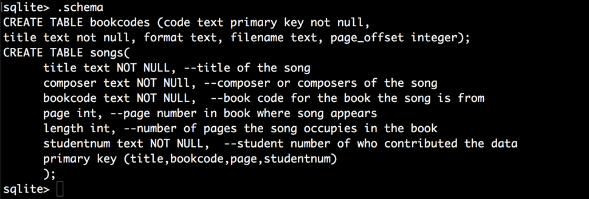

Total 50 marks
Question 1 (20 Marks)
-see marking
details with question.
Question 2 (10 Marks)
-see marking
details with question.
Question 3 (20 marks)
R3.1 --5 marks
R3.2 --5 marks
R3.3 --5 marks
R3.4 --5 marks
revisions and corrections:
REV 3: Changed R2.3 to indicate you can use more traditional SQL types like char, varchar, date etc. instead of just INTEGER and TEXT.
REV 2: I don't need any more sample scripts.I I have enough now thanks.
REV 1 Sept 11: Added suggestion for requirement 1.3 on dealing with multiple possible composers.
In this assignment you will get some practice writing SQL insert scripts with original data and write a proposal for the database project you want to build this term.
You are asked to contribute to a collective database using an SQL script. For this assignment you will need to download and install SQLite on your computer. Installation and basic tutorial instructions are posted on the course website and some are provided below also. You should browse the SQLite documentation at sqlite.org web site to see how it works. Become familiar with their SQL documentation section. Demos will also be done in class and some of the installation and use instructions are repeated below.
Question 1: A collective effort to build a database to help our students in the music dept. The background of the application is described below. We intend to merge all your contributions into one large dataset for use later in the course.
Question 2: Build an simple insert script for the data that the recommend text uses to illustrate SQL operations. This dataset will also be used in our powerpoint slides that explain SQL operations.
Question 3: In future assignments you will be modeling and implementing a database of your own choice using data that you are, hopefully, interested in. In this assignment you need to propose what your database will be about and provide us with the backstory of your proposed project. We have provided a sample document for the proposed fakebook indexing database project here to serve as an example. You are required to provide an adequate description and some sample documents that would explain to us what your database is going to be about, as we have done here for a proposed fakebook project.
SQLite is a very popular free serverless relational database available from the following site: https://www.sqlite.org/index.html
The download is found here: https://www.sqlite.org/download.html. Basic install instructions are also posted with our course resources section.
You should download and install sqlite and try some basic examples from the sqlite documentation page: https://www.sqlite.org/cli.html .
The sqlite3.exe application provides a command line shell from which you can create sql databases and run queries. You can also read sql commands from a file using the .read command (see the documentation) and we will use this to create an initial database for part I of the assignment. You will be providing a analogous script file for your project database.
Here is a simple session example from the documentation page
$ sqlite3 ex1
SQLite version 3.6.11
Enter ".help" for instructions
Enter SQL statements terminated with a ";"
sqlite> create table tbl1(one varchar(10), two smallint);
sqlite> insert into tbl1 values('hello!',10);
sqlite> insert into tbl1 values('goodbye', 20);
sqlite> select * from tbl1;
hello!|10
goodbye|20
sqlite> .exit
$
In the above example a database called ex1 will either be
opened, or created if it does not already exist.
In sqlite3 .commands (i.e. commands that start with a dot) are not SQL statements but rather special instructions for the sqlite3 shell. Some useful ones are:
| Command | Explanation |
|---|---|
| .help | List a summary of all the dot commands. |
.exit |
Quit the application (also .quit) |
| .tables | List all the tables in the open database. |
| .schema table_name | Display definition of the table in SQL |
| .schema | Without a table name will display the schema for all your tables in the database |
| .schema sqlite_master | An sqlite database has a hidden table called sqlite_master that shows information about the database's tables. It can be helpul to query this. sqlite> .schema sqlite_master CREATE TABLE sqlite_master ( type text, name text, tbl_name text, rootpage integer, sql text ); sqlite> |
| .read file_name | Read sql and cli commands from a file called file_name (e.g. telephone_switch.sql) in the current directory |
| .mode column | Show output of SELECT statements as columns. Other modes:
|
| .header ON|OFF | Show column names header |
| .echo ON|OFF | Show the sql query being processed |
| .import FILE TABLE | Import data from FILE (csv format) into TABLE |
.separator STRING .separator COL ?ROW? |
Set column separator using in .output and .import to STRING Change the column separator and optionally the row |
| .show | Show values of various variables including the current separator string
sqlite> .show
echo: off
eqp: off
explain: auto
headers: on
mode: column
nullvalue: ""
output: stdout
colseparator: "|"
rowseparator: "\n"
stats: off
width:
filename: :memory:
|
| .output file_name | Redirect output to file file_name |
| .output stdout | Redirect output back to stdout (console) |
| .dump table_name | Output the contents of table table_name, or entire database, as an sql script |
| .width 10 20 5 | Set the output column width for column mode. In this example the column widths of the three columns of output would be 10,20 and 5 characters. |
Here is how you could run a telephone_switch.sql script if
located in the same directory as your database. Note it
could take a few minutes to build the database. Once it's done you should use
.tables to see if the tables are there and then try the select * from one of the
tables as shown below.
c:\sqlite>sqlite3 example1 SQLite version 3.7.2 Enter ".help" for instructions Enter SQL statements terminated with a ";" sqlite> .read telephone_switch.sql sqlite> .tables calls services trunk_routes facilities subscribers trunks lines treatments service_subscribers trunk_channels sqlite> sqlite> .mode column sqlite> .header on sqlite> select * from subscribers; portid name address ---------- ----------- ------------ 1 Mats Sundin 45 Elgin St. 2 Jason Allis 46 Elgin St. 3 Eric Lindro 48 Elgin St. 4 Bryan MacCa 23 MacLeod S 5 Steve Nash 1129 Otterso 6 Michael Jor 1223 Carling 7 Roger Cleme 14 Hopewell ...
Our music students use "fake books" or "real books" as a basis of study and improvisation. These are typically .pdf copies of books that contain a few hundred songs each. The students often need to find and cross-reference songs from different books.
We have been provided with .pdf photo copies of the original table of contents of the books and also a large .txt file that represents a first attempt to catalog songs in those books. The .txt file contains song titles with page numbers for some 4000+ songs. We will use this "raw" data to build an SQLite indexing database.
In an earlier attempt to do this we tried to catalog just that information (book, song title, and page number) but found that to be insufficient. What appears to be needed also is the number of pages each song occupies in the book and the composer, or composers, of the song. So in this exercise we will do some additional research to provide that information and include it in our SQL insert scripts.
The "raw" data consists of the following:
1)The pdf scans of the original table of contents of the books. These appear in the toc_scans folder. Some of the scans are very clean, some not so much. You will use these files to verify the the song titles and page numbers you are responsible for are correct.
2) A .txt file toc_data.txt of some 4000+ songs that lists the book code, song title, and page number. That is, the data provides the book code that identifies the book, the title of the song and the page number from that book on which the song appears. Many songs in fake books take up only one page but some are serveral pages long. There can also be more than one song on a particular page. This is supposed to be the same information as provided by the .pdf scans but is now in .txt format that you could cut and paste from. However there are likely to be errors in the .txt file so you should go back to the .pdf scans for verification.
3) We have provided a .pdf file student_numbers.pdf that maps your student number to a range of 10 entries in the toc_data.txt song index file. You will be resonsible for those 10 entries and account for them in your SQL script.
To find the 10 songs you are responsible for look up your student number in the student_numbers.pdf file and find the numeric range of 10 songs you are responsible for. Then, find those songs by rowid in the toc_data.txt file. Those are the songs your SQL script should insert into the database. Later we will try and merge all the scripts to form a larger dataset.
We have provided the starting sqlite database fakebooks.db which has the following schema:

We have provided an example sql script insert_script.sql. Here is what the script looks like:
--INSERT DATA
--=======================
begin transaction;
--Insert songs
insert or replace into songs(title, composer, bookcode, page, length, studentnum)
values ('Girl From Ipanema, The','Antonio Carlos Jobim', 'RBK1-5ed', 171, 1, '100012445');
insert or replace into songs(title, composer, bookcode, page, length, studentnum)
values('Walkin''','Richard Carpenter', 'LOMJ', 211, 1, '100012445');
insert or replace into songs(title, composer, bookcode, page, length, studentnum)
values ('Walkin'' Shoes','Gerry Mulligan', 'LOMJ', 133, 2, '100012445');
insert or replace into songs(title, composer, bookcode, page, length, studentnum)
values ('"Wee-Dot"','J.J. Johnson, L.Parker', 'LOMJ', 138, 1, '100012445');
/*
Replace the above insert statements with ones
that contribute the data you are responsible for
*/
end transaction;
Examine the fakebook.db database with sqlite3 and observe that it has the data associated with this script already in it. If you run this script (with .read insert_script.sql from within the sqlite3 command line interface) you should notice it appears to have no effect on the database. In other words this script is idempotent which means the effect of running it multiple times is the same as running it only once. In some cases, like this assignment problem, you will be required to have your scripts be idempotent.
Notice we've chosen a few titles that have quotation marks in them so you can see how they are escaped in the script. (The fakebook.db database contains a table called bookcodes that identifies the book a particular bookcode refers to.)
Your task is to replace the sample insert statements with ones that insert the data you are responsible.
Here are the specific itemized requirements for Question 1.
R1.1 Your script must account for the songs your are repsonsible for as identified in the student_numbers.pdf and toc_data.txt files. Look up your student number in the student_numbers.pdf file, find the numeric rowid range of 10 songs you are responible for and then look those up in the toc_data.txt file.
R1.2 Your script should fix errors that might be in the toc_data.txt data file. Look up your songs in the original table of contents .pdf files in the toc_scans folder and verify that the song title and page numbers are correct. Here you might end up deleting duplicate entries in the toc_data.txt file that might exist.
R1.3 You need to do some research (e.g. googling) and determine the composer, or composers, of each song you are responsible for. This information needs to be included in your SQL insert script. You can list multiple composers and names separated by commas. If you research identifies that the lyrics and music were written by different people then put 'lyrics:' and 'music:' with the names. For example:
title: Your Song
composer: music: Elton John, lyrics: Bernie Taupin
Rev 1: If when doing research on the composer you come across several different possiblities because the same song title has been used by different composers do the following. The songs in this list are mostly from the "jazz standards" repertoire so try including that phrase in your google search and see if it helps. If you still have multiple options for who the composer might be then choose one of the options but include the word "UNCONFIRMED" with the composer(s). That way we can search for those entries and try to find the original books to help sort it out.
R1.4 Your script has to include both the page number of the song in the particular book and also the number of pages the song occupies in the book. This will be important if we want to use the database to index an actual pdf fake book. Since you don't have access to the actual fake books you will have to estimate the length of the song based on when the next song appears in the book. Use the table of contents data to determine as best you can what the length of your songs are. Note some pages have more than one song on them and each count as one page long.
In theory the number of pages a song occupies could be computed by querying that database and calculating it just as you are estimating it. As the course progresses though you will discover that this would actually be a difficult and problematic query -it touches on one of the weaknesses of relational databases.
R1.5 Your song title and other text data should just use simple ASCII characters. Don't try to encode characters with accents or characters from other languages. Use the closest ascii keyboard characters as this will help with queries. Also song titles that start with "The" should have the "The" at the end of the title. For example use "Girl From Ipanema, The" and NOT "The Girl From Ipanema". Use normal title case and don't put your data in all caps or all lower case.
R1.6 Your song title should properly preserve punctuation in the title, especially quotation marks, comma's and brackets. If your song title contains double or single quotes you are going to have to experiment with how go get the data entered correctly with SQL. Basically if you need your title to contain a singlequote you should put two single quotes in a row as an escape sequence. You can put double quotes inside the single quotes. For example the sample script above enters a song with title Walk Don't Run and also a title "Wee-Dot". Try this out and make sure your song titles preserve their punctuation.
R1.7 Your script must be idempotent and must not destroy and data already in the database or drop the existing database table. If your script contains the create table ... statement then please make sure it also uses the "if not exists" clause otherwise your script will cause an error if the table is already in the database. Also do not include any "drop table" commands in your script -again we don't want you destroying the data read in by previous scripts. We want to just be able to read your script and have it contribute to the already existing data.
R1.8 Your script must be idempotent. Run your script against the fakebook.db database to see that your data gets added and verify that if you run it multiple times that only one copy of your data is ever in the database. Note the sample script is idempotent because it uses an insert or replace statement and not just an insert statement and because it does not rely on an auto-increment integer primary key.
R1.9 Your insert script must add your student number as the student column data entries. This way the marking TA can look up your student number in the database after your script is run to find your contributions.
R1.10 Your answer insert script must be titled insert_script.sql and be human readable SQL that we can read using the .read command within the sqlite3 command line shell. The .read command can read script files consisting of sqlite dot commands so you could input data with, for example, .import commands but for this assignment we want you to supply actual SQL statements. Also, your script should have your name in its comments. The TA's will be marking your code by performing an .read insert_script.sql command within the sqlite CLI.
Make sure to test your script so you know it works before submitting it -see important marking instructions below. For example, make sure your script does not destroy data already there, or throw SQL errors trying to insert your script. Read your script a second time and see what effect that has on the database.
REV 2: I don't need any more sample scripts. I have enough now -thanks. If you have finished your script ahead of the
assignment due date, email me a copy (ldnel@scs.carleton.ca) so I can
incorporate some right away into the collective script and use it for classroom demos. Please name any script file you email me like 100223456.sql (that is, using your student number) that way I can easily distinquish them.
Marking Instructions:
IMORTANT: 0 MARKS IF THE SCRIPT THROWS AN SQL ERROR WHEN READ INTO THE EXISTING DATABASE AND DOES NOT ADD DATA.
Assuming the script runs and adds data start with 20 marks for a working set of SQL statements. Deduct 2 marks for each of the above requirements not met.
Also deduct one mark for each data error that you find in the data inserted compared to what is provided on the original pdf scan of the table of contents pages. The goal here is for the student to not have any errors and get all the 20 marks. Note that the index page scans may contain other information but we are only interested in the song's title, page number and the bookcode of the book that it is from. Use the student number provided in the insert script to query their contributions. E.g. select * from songs where student_number like '100012345'; as an example.
The recommended text for the course uses a small data set to illustrate many query concepts. I also use this data set in many of the powerpoint slides in the notes. Here we want you to build an SQL insert script so we can actually play with this data set as we are learning the query concepts. The data set is represented in the file Elmasri and Navathe data.pdf
Here are the specific requirements (2 marks each):
Your SQL script should create the tables necessary. Your CREATE TABLE commands should be preceded by DROP TABLE commands so that the database is destroyed and rebuild each time the script is run. (This will provide an easy way to reset the data after doing some experiments that modify it.) Name your script elmasri_navathe_data.sql
The generated data should have all the data presented in the pdf document and be represented by the same six tables.
Your data types should use INTEGER types for the simple numbers like department number etc. It should use TEXT types for the other fields including date strings and social insurance numbers. REV 3: you can use the other, "more standard" SQL types like varchar, char, date etc. if you want. SQLite will accept the various SQL string types but treat them all as TEXT. Just make sure your script runs with sqlite3.
Your tables should have the primary key specified for all tables and be consistent with those shown in the pdf document (keys are underlined in the tables provided).
Your CREATE TABLE commands should set constraints NOT NULL and/or UNIQUE for columns you think should have them.
If you finish early please email me a copy so I can demo this in class. --Thanks I've now received a couple and don't need any more.
In all the subsequent assignments you will be building a database of your own choosing. (3005 will be a lot more fun if you are also working with some data that interests you.) In later assignments you will model the database, provide the data, and SQL scripts to create the data, and and finally demonstrate some querries using your data. For this assignment you need to propose what your database is going to be about and provide us with some background. Your proposal needs to have the following contents.
As a complexity guideline your proposed database will need to have at least one or two MANY-TO-MANY data dependencies. For example students take many courses and courses have many students enrolled. In a database that keeps track of students taking courses this would be a many-to-many dependency. As another example: a video store rents a particular video to many customers and each customer rents many videos.
See the following proposal for a fakebook database project as an example of what your document might look like fakebookDatabaseProject/fakebookDatabaseProject.html
Describe what your database is about, and what service it is intended to provide for its users. Provide whatever backstory is appropriate of us to understand the motivation behind your proposed project.
Itemize the requirements of the service that your database is supposed to provide to its users. See sample proposal provided.
Describe any potential legal or intellectual property issues that might arrise from the use of the data, or provide the rationale for why there would not be any such issues. See example from fakebook database proposal. Any database that is publicly visible must address the issue of who owns the data and whether you have the right to make it public.
Provide some sample documents that represent the kind of data, or sources of data, that your project is based on. Or provide documents that show the kind of report that might be generated from the database.